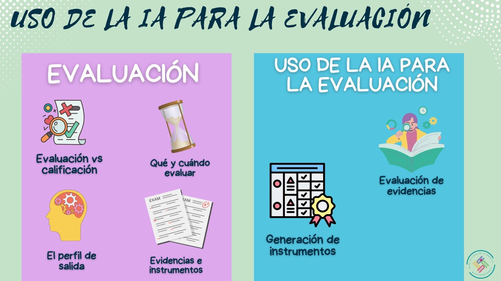

0.1. ¿Y esto de qué va?
Presentamos este recurso educativo abierto (REA) diseñado como una introducción accesible al mundo de la inteligencia artificial relacionada con la educación, especialmente para la evaluación. Este humilde proyecto busca orientar al profesorado en el uso educativo y ético de la IA, explorando sus posibilidades y fomentando su integración práctica en el día a día docente.
Este REA es fruto del trabajo de El loco de la mochila, quien está encantado de compartir contigo su experiencia y sus ideas.
¡Mucho ánimo y adelante!
0.2. Nuestras compañeras de viaje.
Cualquier viaje siempre es mejor hacerlo en buena compañía... Así que en este REA nos van a acompañar FlashFormative, Lexa, EmilIA, NumeraTOR y ConecTOR, quienes nos guiarán a lo largo del desarrollo, asegurándose siempre de nuestro aprendizaje. ¡Vamos primero a conocerlos un poco!
| FlashFormative: la evaluación formativa es casi su único centro de interés. Le obsesiona el feedback y la evaluación -pero la cualitativa en exclusiva-. El proceso de evaluación es su línea de vida. |
|
| EmilIA es una experta en el funcionamiento técnico de cualquier inteligencia artificial. Nació, creció y estudió entre cables. Comprende a la perfección la mente de una IA. De hecho, sus mejores amigas son inteligencias artificiales. EmilIA nos guiará en el conocimiento del funcionamiento de la inteligencia artificial y en su uso educativo. | |
| ConecTOR es un listillo. Conoce todos los rincones de Internet. Es experto en webgrafías e hiperenlaces. Su cerebro tiene una conexión directa con ChatGPT. ConecTOR nos ofrecerá recursos en la red para ampliar nuestros conocimientos o para resolver dudas. | |
| LEXA es experta en legislación educativa, especialmente en LOMLOE. Se sabe de memoria artículos completos y, además, está realmente obsesionada por citar las referencias legales y por la fundamentación legislativa en general. | |
| NumeraTOR es un profesor de matemáticas obsesionado con los números. Se preocupa mucho por explicar todo tipo de cálculos de forma clara y didáctica. La exactitud es su principal talento. |
0.3. Mapa de este REA.
